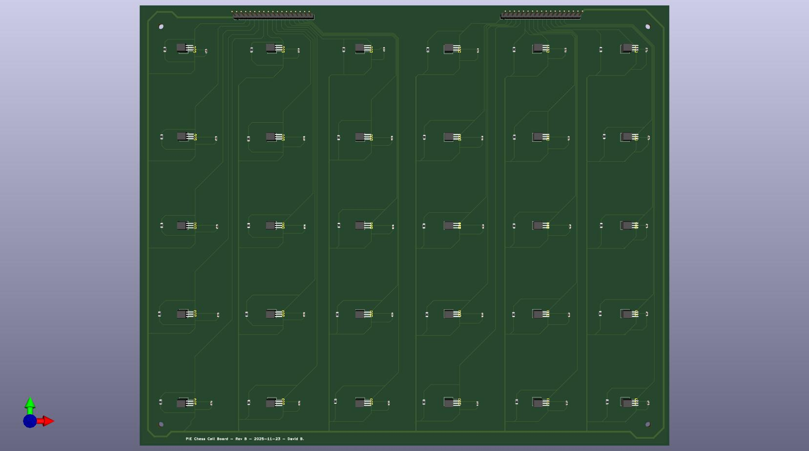
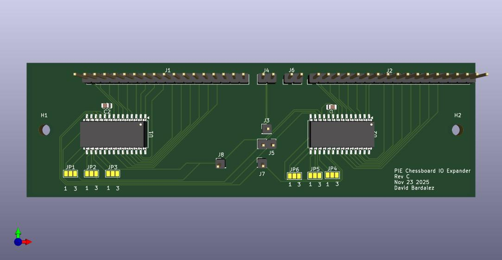

Masterpiece Chessboard Hall-Effect Sensing System
Designed the sensing subsystem for an automated chessboard using custom Hall-effect sensor and I2C expander PCBs, embedded firmware, and full-board signal integration. The system detected square occupancy in real time, assembled a board-state matrix, and transmitted that data over serial to the larger game system.

Full system view of the chessboard sensing build used for real-time occupancy and move detection.
Overview
This project was the sensing subsystem of a larger automated human-vs-computer chessboard, where my work focused on the electronics and firmware needed to detect board occupancy in real time. The goal was to build a sensing architecture that could reliably determine which squares were occupied and provide that information to the rest of the system for move tracking.
I approached the board as a scalable embedded sensing system rather than a small proof of concept. That meant designing custom PCBs, building the readout architecture around MCP23017 I2C expanders, writing firmware to assemble the board-state matrix, and debugging the electrical and physical integration challenges that appeared at full size.
To scale the design across the full board, the sensing system was split into four quadrant PCBs and paired with expander boards for organized readout. That made full-board integration, interconnect routing, and bring-up much more challenging than validating only a small test section.
You can also view the full team project site here: Masterpiece Team Website .
Images

Custom sensor PCB used to read Hall-effect sensors across a section of the board.

Expansion PCB used to scale sensor readout and organize full-board I2C communication.
My Contributions
- Designed custom Hall-effect sensor and I2C expander PCBs to scale occupancy sensing across the chessboard.
- Built embedded firmware that scanned the sensing hardware, assembled the board-state matrix, and sent that matrix over serial to the larger system.
- Debugged full-system integration across I2C communication, addressing, wiring, board assembly, and readout validation.
- Diagnosed a board-level communication failure on one I2C expander path, traced it to incorrect SDA/SCL routing, and recovered functionality through hardware rework rather than a full PCB respin.
- Helped determine that the remaining board-level inconsistency came from mechanical wood bowing rather than the core sensing architecture itself.
- Continued iterating on the design through a cleaner PCB revision and evaluation of more sensitive Hall-effect sensors to improve robustness and reduce wiring complexity.
Technical Highlights
A major part of the project was designing a sensing architecture that could scale across the full chessboard rather than only a small test region. I created custom PCBs for the Hall-effect sensors and for the I2C expansion hardware so the system could read many sensing points in an organized and repeatable way.
On the firmware side, I wrote the code that read the sensing hardware, assembled those readings into a board-state matrix, and transmitted that matrix over serial for use by the higher-level control software. The sensing system detected occupancy rather than piece identity directly, but because the larger system knew the initial board configuration, the occupancy data could still be used for move detection and game-state updates.
The project also required substantial bring-up and debugging work. I worked across PCB design, firmware, wiring, addressing, and board integration to verify that the system could read the board consistently at larger scale. One of the key debugging steps involved tracing a communication issue on an MCP23017 I2C expander path during board bring-up, confirming the routing problem electrically, and reworking the affected hardware to restore consistent readout.
In its current phase, I am redesigning portions of the system to reduce wiring complexity and improve reliability. That work includes testing more sensitive Hall-effect sensors so the system can better tolerate mechanical board bowing and maintain stronger detection margins in the final physical assembly.
Integration Challenges
One of the biggest challenges was scaling from an electronics concept to a full-board implementation. It is much easier to validate sensing on a small prototype than on a large physical surface with many sensors, multiple boards, and extensive interconnects. At full scale, wiring complexity and integration overhead became major design concerns.
Another important challenge was that the final chessboard introduced mechanical effects that influenced the electronics. The sensing system itself worked, but wood bowing in the final board changed the sensor-to-magnet spacing enough to reduce consistency. Solving that problem required thinking beyond PCB and firmware alone and redesigning the system with stronger tolerance to physical variation.
Tools and Skills
Tools: KiCad, Arduino/C++, Logic Analyzer, DMM
Skills: PCB Design, Embedded Firmware, Hall-Effect Sensing, I2C Expansion, Serial Communication, Hardware Debugging, System Integration, Design Iteration
Project Status
The sensing architecture achieved working functionality and full-board occupancy readout, with final consistency limited by mechanical deflection in the chessboard structure rather than the core electronics or firmware. The project is still being improved through PCB redesign, cleaner integration, and sensor-selection changes aimed at making the system more robust in the final build.